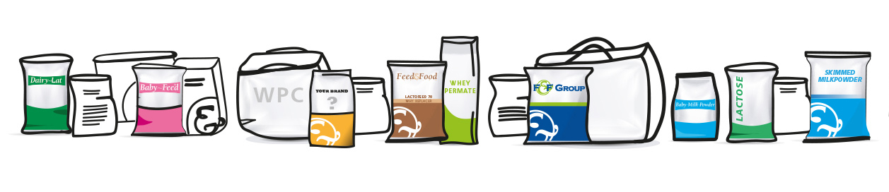
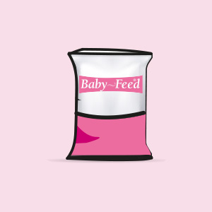

Mahsulotlar
Chorva uchun keng spektrdagi oziqa qo'shimchalar.

Mahsulotlar
Mahsus qo'shimchalar (yosh hayvonlarni oziqlantirish uchun)

YFeed® - yosh hayvonlarning ozuqasini ishlab chiqarish uchun tarkibiy qism. Yuqori sifatli va oson hazm bo'ladigan sut tarkibiy qismlari va o'simlik oqsillari va yog'larning to'g'ri kombinatsiyasida ishlab chiqariladi. Sut tarkibiy qismlari asosan chaqaloqlar va oziq-ovqat sanoatidan keladi va yuqori sifat va aylanma iqtisodiyotga hissa qo'shadi.


Mahsulotlar

Lactoza (chorva qo'shimchasi)
Yog'sizlangan sut kukuni
To'liq qaymoqli sut kukuni
Yog' sut kukuni
Gigroskopik bo'lmagan zardob permeati kukuni
Zardob oqsili konsentrati (WPC 35/60/80%)
Shirin zardob kukuni
Kislota zardobi kukuni
Yog' to'ldirilgan zardob kukuni
Delaktozalangan kukunlar
Demineralizatsiyalangan kukunlar